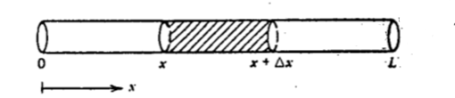

[devam edecek]
Alternatif Anlatim
Bu denklemi türetmek için "enerjinini muhafazası (conservation of energy)" kuralını kullanacağız. Bu muhafaza kuralını bir eşitliğe çevireceğiz, ve bu eşitliği manipüle ederek ortaya bir kısmi türevsel denklem (PDE) çıkartacağız. Baz aldığımız fiziksel ortam bir metal çubuk, ki bu çubukta materyel yoğunluğu her noktada aynı [2]. Formül şöyle;
$[x,x+\Delta x]$ içindeki net ısı değişimi = Tanımlanan bölge sınırlarındaki net ısı akışı + $[x,x+\Delta x]$ içinde üretilen ısı miktarı

$[x,x+\Delta x]$ içindeki toplam ısıyı nasıl hesaplarız? Eğer $u(x,t)$ metal çubuğun $x$ noktasında $t$ anındaki ısıyı veriyorsa, verilen kesit üzerinden bir entegral alırız,
$$ [x,x+\Delta x] \textit{ İçindeki Toplam Isı} = cpA \int _{ x}^{x+\Delta x}u(s,t) \mathrm{d} s $$
Tanımlanan bölge içindeki net ısı değimini ise alttaki ile hesaplarız, üstteki formülün zamana göre türevini alırız.
$$ \frac{d}{dt} \int _{ x}^{x+\Delta x} c\rho A u(s,t) \mathrm{d} s = c\rho A \int _{ x}^{x+\Delta x} u_t(s,t) \mathrm{d} s $$
Türevin entegral içine nüfuz ettiğini görüyoruz, sabit olan $c\rho A$ ise dışarı çıkartılıyor. Bu son ifade, enerji formülünün sol tarafı. Sağ tarafı şöyle ifade edilebilir
$$ = kA [ u_x(x+\Delta x,t) - u_x(x,t)] A \int _{x}^{x+\Delta x} f(s,t) \mathrm{d} s $$
Newton'un kuralı ısı akışının ısı fonksiyonunun uzaklıksal gradyanına (spatial gradient) orantılı olduğunu söyler. Uzaklıksal gradyan $u_x$'tır. Uzaklıksal gradyan, yani $u_x$, sonsuz küçük boyutta yanyana iki parçacağın ısı farkını verecektir. Bu farkı, $[x,x+\Delta x]$'in iki ucunda alırsak, yani farkların farkını bize gereken orantıyı verecektir. Sezgizel olarak bunun niye olduğunu anlamak için fizik kaynaklarına başvurmak faydalı olabilir. Formülün tamamı şöyle
$$ c\rho A \int _{ x}^{x+\Delta x} u_t(s,t) \mathrm{d} s = kA [ u_x(x+\Delta x,t) - u_x(x,t)] A \int _{x}^{x+\Delta x} f(s,t) \mathrm{d} s \qquad (1) $$
Bu noktada üstteki formülde entegrallerden kurtulmak istiyoruz. Ne yaparız? Ortalama Değer Teoremi'en ihtiyacımız var, bu teori {\em Calculus'un Temel Teoremi} yazısında işlendi. Teoriye göre, eğer $f(x)$ bir $[a,b]$ aralığında sürekli ise o zaman en az bir $\xi$ olmalı, $a < \xi < b$ olacak şekilde ve
$$ \int _{ a}^{b} f(x) \mathrm{d} x = f(\xi)(b-a) $$
doğru olmalıdır. Bu teoriyi (1)'e uygularsak,
$$ c\rho A u_t(\xi_1,t)\Delta x = kA[u_x(x+\Delta x, t) - u_x(x,t)] + Af(\xi_2,t)\Delta x $$
$$ x < \xi < x+\Delta x $$
elde ederiz. $\xi_1,\xi_2$ yerine sadece $\xi$ kullanılabilir, sebebini altta göreceğiz, sonra iki tarafı $c\rho A \Delta x$'e bölersek
$$ u_t(\xi,t) = \frac{k}{c\rho} \bigg[ \frac{u_x(x+\Delta x,t) - u_x(x,t)} {\Delta x} \bigg] + \frac{ 1}{c\rho}f(\xi,t) $$
Şimdi
$$ \Delta x \to 0 $$
olsun, bu durumda üstteki büyük parantez içindeki bölüm bir kısmi türev haline gelecektir, $\xi \to x$ olacaktır, çünkü aralık öyle küçülüyor ki arada kalan $\xi$ değeri sadece $x$ olabilir.
$$ u_t(x,t) = \alpha^2u_{xx}(x,t) + F(x,t) $$
Ayrıca
$$ \alpha^2 = \frac{k}{c\rho} $$
$$ F(x,t) = \frac{1}{c\rho}f(x,t) $$
eşitliklerini kullandık.
Kaynaklar
[1] Rathore, Engineering Heat and Mass Transfer, 3rd Edition
[2] Murlow, Partial Differential Equations for Scientists and Engineers, sf. 27